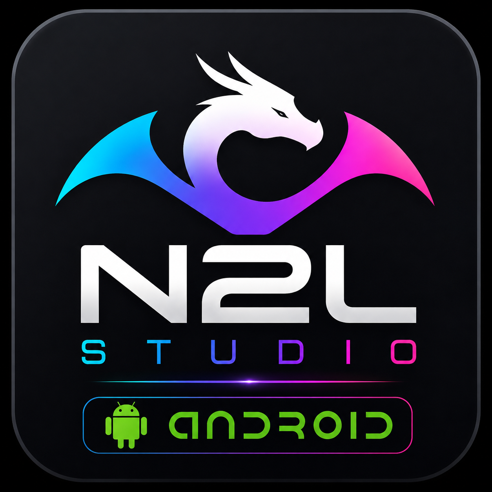
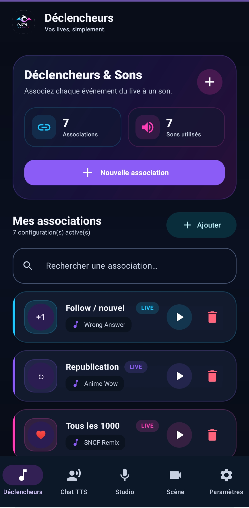
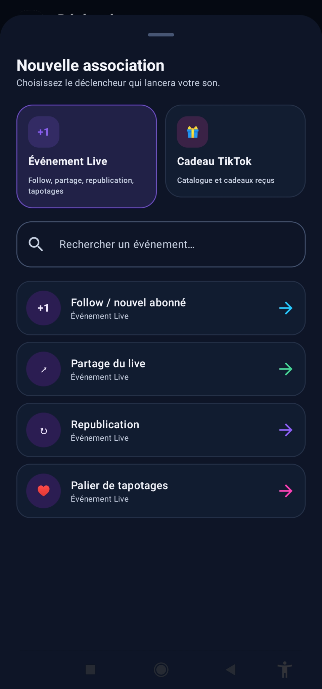

Bibliothèque de cadeaux évolutive
Les cadeaux reçus sont détectés et ajoutés automatiquement avec leur nom, leur image et leur valeur. La bibliothèque s'enrichit au fil des LIVE.

Vos LIVE. Simplement.
N2L Studio accompagne les créateurs pendant leurs LIVE TikTok avec des sons personnalisés, une bibliothèque de cadeaux évolutive et des outils simples à utiliser.
Les fonctions importantes de la version Android regroupées au même endroit.
Les cadeaux reçus sont détectés et ajoutés automatiquement avec leur nom, leur image et leur valeur. La bibliothèque s'enrichit au fil des LIVE.
Associez un son aux follows, partages, republications, membres, cadeaux et paliers de tapotages.
Déclenchez automatiquement un son à chaque seuil défini, par exemple tous les 1 000 tapotages.
Importez vos propres sons ou utilisez directement les fichiers audio déjà présents sur votre téléphone.
Faites lire les commentaires à voix haute et ajustez la voix, le volume et la vitesse.
Enregistrez, mettez en pause, écoutez, importez puis ajoutez vos créations à votre bibliothèque.
N2L Studio peut continuer à suivre votre LIVE pendant que vous utilisez une autre application.
Fonction expérimentale réservée aux LIVE Gaming. Elle n'est pas compatible avec les LIVE Match et peut encore évoluer.
Créez vos associations sonores et retrouvez rapidement les événements de votre LIVE.


N2L Studio utilise une API gratuite pour se connecter aux événements du LIVE TikTok. En cas d'indisponibilité temporaire du service, certaines fonctions liées au LIVE peuvent être perturbées.
Vous pouvez me contacter directement par e-mail au sujet de N2L Studio Android.
N2L Studio est développé sur mon temps libre et reste gratuit. Si l'application vous est utile, vous pouvez soutenir son évolution avec un don libre.